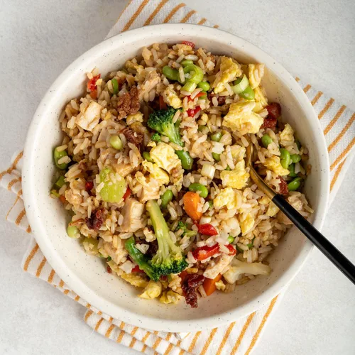

Home
Fried Rice

Description
This easy fried rice recipe captures the flavor of fried rice from your favorite take-out spot. Use leftover rice and leftover chicken for a satisfying meal that's simple to put together.
Ingredients
- 2 eggs, beaten
- 1/4 teaspoon salt
- 3 tablespoons neutral oil, divided
- 4 cups cooked rice
- 1 1/2 cups frozen stir-fry vegetable blend
- 1/2 cup sliced green onions
- 1 garlic clove, minced
- 1 cup diced cooked chicken
- 3 tablespoons soy sauce
- 1 tablespoon chicken broth
- 1/2 teaspoon pepper
- 1/4 teaspoon ground ginger
Steps
- Combine eggs and salt. In a large skillet or wok over medium heat, scramble eggs in 1 teaspoon oil, breaking eggs into small pieces. Remove from skillet and set aside.
- Add remaining 2 tablespoons plus 2 teaspoons oil to skillet. Stir-fry rice over medium-high heat for 5 minutes.
- Add vegetables, onions and garlic; stir-fry for 5 minutes. Add chicken; stir-fry until heated through, 3-5 minutes.
- Combine soy sauce, broth, pepper and ginger. Add to rice; stir to coat. Add bacon and eggs; heat through.